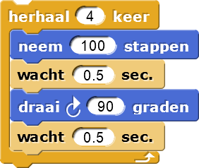

Beweging Verkennen
Dit zijn de werken door kunstenaars Josef Albers, Maya Hayuk, Vassily Kandinsky, Atta Kwami, Kazimir Malevich, Carlos Merida, Piet Mondrian, Alma Thomas, en Theo van Doesburg. De stijlen zijn anders, maar allemaal zijn ze gebaseerd op polygonene en cirkels


In deze les, zul je polygonen creeëren om je eigen kunst te maken:


Op deze pagina, zul jij de basis ontdekken van hoe je een vorm in Snap tekent!
door het repeat blok te gebruiken om dezelfde code meerdere malen te doorlopen
Een algoritme is een opeenvolging van stappen die uitgevoerd kunnen worden door de computer. In sommige programmeertalen, zoals Snap!, programmeer jij algorithme door blokken (individuele opdrachten) te slepen en aanelkaar te klikken. In andere talen schrijf je de instructies. Het idee is hetzelfde.
- Stel je
voor hoe het algoritme de Sprite zal beïnvloeden:
 - Log in op Snap! en bouw het
script en test je hypothese.
Klik op het script om het uit te voeren.- Klik erop en kijk wat de sprite doet.
- Klik op en klik daarna op je script om het nogmaals uit te voeren.
 Analiseer
hoe het script doet wat het doet.
Analiseer
hoe het script doet wat het doet.- Vergelijk je script met het script van een andere groep. Als het script zich anders gedraagt controleer dan beide scripts.
 Wissel wie van
jullie achter het toetsenbord zit.
Wissel wie van
jullie achter het toetsenbord zit.
- Experimenteer.
- Verander 100 naar 50 zoals getoond in het
neem ... stappenblok van jouw script, en klik nogmaals op het script om het met de nieuwe waarden uit te voeren. - Klik op het blok in het groene Pen pallet.
- Verander het getal in het blok en voer het script nog een keer uit... en nog een keer... en nog een keer.
- Verander het getal in het blok.
- Experimenteer met de getallen in de
draai ... gradenenherhaal ... keerblokken. een driehoek te tekenen. - Gebruik om de pen dikte naar iets als 4, 10 of 50 te zetten. Teken daarna hier iets mee.
Je kunt klikken op (of elk ander blok) in het palet of in het werkblad om het uit te voeren. Als je op een blok klikt in het script, dan wordt het volledige script uitgevoerd.Om de pen dikte te wijzingen klik op hetmaak pengrootteblok om het uit te voeren nadat je het nummer ingevoerd hebt. - Verander 100 naar 50 zoals getoond in het
- Experiment: Wat laat een spoor achter?
- Beweeg de sprite door deze te slepen naar een nieuwe locatie. Laat dit een spoor achter terwijl je sleept?
- Beweeg de sprite door op te klikken. Laat dit een spoor achter wanneer deze beweegt?
- Klik op . Laat het een spoor achter?
Het blok kan je sprite terughalen wanneer deze van het scherm afbeweegt.